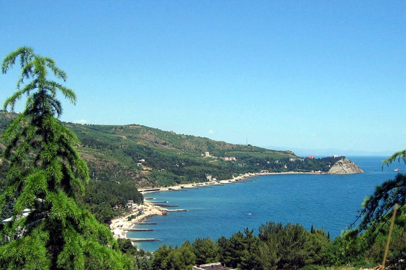
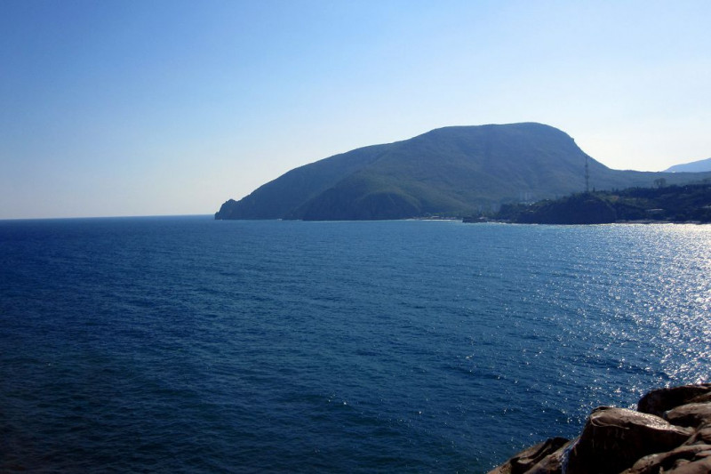

Мыс Плака в Крыму
Первое впечатление от мыса Плака – он великолепен! Впрочем, это впечатление не проходит, даже спустя много лет, после посещения мыса Плака. Фантастически красивое место! Настоятельно рекомендую побывать здесь.
Про мыс Плака, как выяснилось, почти никто ничего не знает и даже не представляет себе, где он находится. Да чего там греха таить, автор этого сайта, в принципе, до поры до времени и сам не особо представлял. Пока однажды, жарким летним днем, у него не возникла идея махнуть пешком из Партенита до Утеса.
Кажущееся большим расстояние между этими двумя населенными пунктами, на деле оказалось не таким уж и значительным.Выйдя в жаркий августовский полдень из Партенита через пару-тройку часов, мокрые и липкие от пота вы уже сможете блаженно созерцать великолепные крымские пейзажи с высоты мыса Плака.
Плюсы отдыха в Партените
Начнем, пожалуй, с хорошего, т.к. его намного больше:
- Хорошее расположение курорта – долина между Ялтой и Алуштой, которая примыкает к горам.
- Чудесный пейзаж, который удивляет чудесными кипарисами, приятными можжевельниками и скалистым покрытием;
- Мягкий климат, что способствует отдыху в любую пору года. Осенью, например, отдых в Крыму Партенит покажется вам расслабляющим и релаксирующим, т.к. солнце в эту пору года на полуострове очень мягкое, а водичка похожа на чай.
- Отличные галечные пляжи. Галька гладкая и обтесанная водой, поэтому ходить по подобному покрытию очень комфортно.
- Наличие платных пляжей со всеми удобствами с видом на подножье Медведь-горы.
- Большое разнообразие различных развлечений на воде: экскурсии на пароходах, катание на банане, водном мотоцикле, горки для детей и многое другое сделает ваш отдых незабываемым.
- Возможность активного отдыха: восхождение на горы, дайвинг среди подводных скал, рыбалка, подводная охота – все это доступно вам в Партените.
- Отличные отели и частные дома, которые оборудованы под жилье для туристов. За вполне демократичную цену вы сможете снять для себя жилье со всеми удобствами. Конечно же, чем больше цена — тем больше удобств.
Минусы отдыха в Партените
Теперь перейдем к незначительным минусам отдыха на крымском курорте:
- Трудно найти жилье в самый разгар сезона – июль, август. Курорт настолько популярен, что во время основного отдыха всех людей, найти свободное жилье не так уж просто, тем более об этом знают и сами хозяева, поэтому цены на свободные номера в этот период запредельные.
- На диких пляжах, то есть там, где за отдых на территории платить не нужно, совсем нет кабинок для переодевания и емкостей с пресной водой для ополаскивания. Иногда это вызывает возмущение и некие неудобства. Хотя, если рассудить, вы можете заплатить за вход на платный пляж, где все это имеется.
- Также возможны перебои с подачей воды. Она подается или по графику, или с родника, который может засориться или вовсе перестать функционировать.